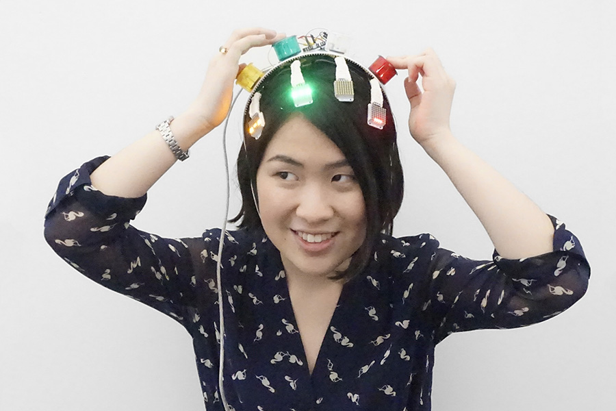
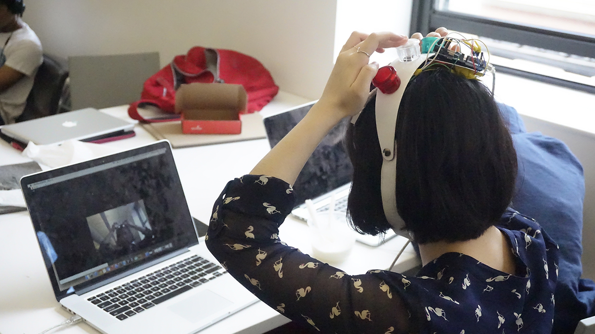
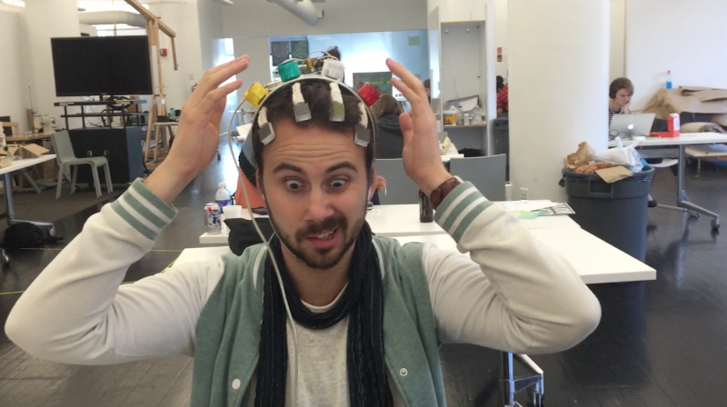
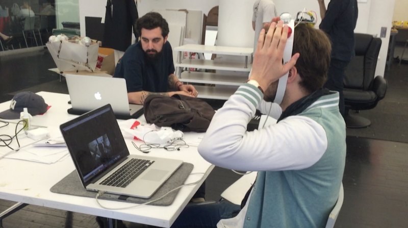

Make a Face!
2015
   This project went through multiple iterations. I spent a great amount of time testing the capability and shortcomings of the OpenFrameworks Face Recognition library. After a few prototypes, I decided to focus on the interaction between the visions of the player and the computer. In the final version, the computer screen shows different icons to represent different tasks for the player. For instance, the “eye” icon means to blink eyes; the “mouth” icon indicates to smile; the colorful webs on the upper part of the screen instruct the player to press the buttons with the corresponding color. They player needs to react as fast as possible before the icons disappear. The difficulty increases overtime when the player has less time and more tasks to complete.
Through the user testing, especially from the advice of my game design colleagues, the most valuable lesson that I learnt was the step-by-step instruction for the users to adapt to the rules and speed of the game. I tried using icons and visuals, instead of heavy texts, to more intuitively direct the players into the game. However, to understand the meaning of each icon still required more tolerance of the game in the beginning.
Watch the video of people playing the game.